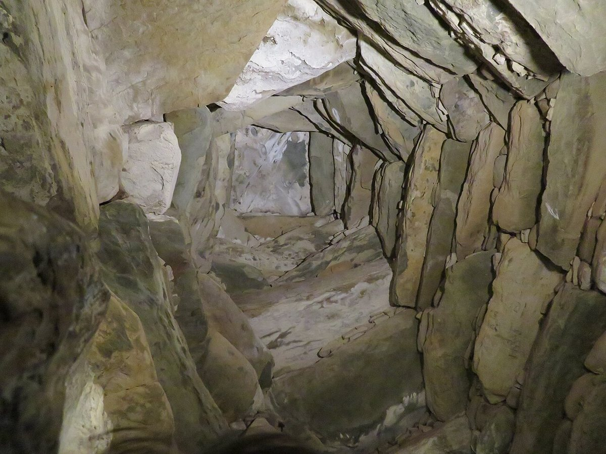

National Monuments Service Historic Environment Viewer ↗
Locate monument records and mapped archaeological places south of the present border.
Deep dives / Europe & Mediterranean
The history on this map belongs to the whole island of Ireland. A marked bear bone, passage graves, harbour excavations, letters from exiles and census tables offer distinct views of life on the island. Sites in the north connect to the separate Ulster guide, which follows movements across present-day jurisdictions and the North Channel.
Selected evidence from across Ireland through 1900, including north–south and overseas connections. Modern jurisdictions locate sources and sites.

Approximate discovery sites, built places and historical reference localities on a modern basemap.
About 33,000 years ago, possible evidence
A reindeer bone from the Castlepook cave assemblage has a mark interpreted by zooarchaeologist Ruth Carden as the result of stone-tool butchery. [1]
52.23°, -8.60°12,810–12,590 calibrated years BP
Cut marks on a bear kneecap from the Alice and Gwendoline cave assemblage provide dated evidence of a late-glacial human presence in Ireland. [2]
52.79°, -8.97°About 7750–7540 calibrated BCE
Circular patterns of postholes and pits mark Mesolithic occupation above the River Bann. [3]
55.11°, -6.65°About 7540–7320 BCE
A pit contained cremated bone and a ground stone axe at a riverside Mesolithic burial site. [4]
52.71°, -8.45°Fourth millennium BCE, disputed dating
Buried walls preserve a large system of enclosed land on the north Mayo coast. [5]
54.31°, -9.46°Around 3200 BCE
A long passage and inner chamber sit within a mound whose entrance aligns towards the winter solstice sunrise. [6]
53.70°, -6.47°Later Neolithic, third millennium BCE bracket
A large circular enclosure and the remains of a passage tomb survive in a landscape with other Neolithic funerary and ceremonial sites. [7]
54.53°, -5.95°About 2400–2000 BCE
Early Bronze Age finds and workings at Ross Island preserve evidence of copper production near the Lakes of Killarney. [8]
52.04°, -9.53°About 1100–800 BCE
Excavation at the cliff-top fort identified settlement activity and Late Bronze Age deposits. [9]
53.13°, -9.77°About fifth–seventh centuries CE
An extensive monument landscape came to hold an important place in traditions of early Irish kingship. [10]
53.58°, -6.61°Mid-sixth century CE
A religious community associated with Ciarán developed by a junction of overland and river routes. [11]
53.33°, -7.99°Later sixth century CE, traditional foundation
The monastic community traditionally associated with Kevin occupied a valley framed by lakes and steep slopes. [12]
53.01°, -6.33°Around 619–621 CE
Water stored behind a dam drove a mill as the tide receded. [13]
54.50°, -5.64°Around 800 CE
The manuscript’s calligraphy and layered decoration preserve evidence of skilled early medieval bookmaking. [14]
53.73°, -6.88°841–917 CE, recorded base and return
Written and archaeological evidence documents a ninth-century seaborne base and the later development of a trading town. [15]
53.34°, -6.27°914 CE, recorded establishment
A site at a bend of the Suir developed as a seaborne stronghold and exchange centre. [16]
52.26°, -7.11°From the 1170s into the early 1200s
A major stone castle developed from the fortified seat associated with Hugh de Lacy. [17]
53.55°, -6.79°Late twelfth century CE
John de Courcy’s expansion into east Ulster brought a stronghold to a rock overlooking the lough. [18]
54.72°, -5.81°Fifteenth century CE
A tower and castle complex by the River Eske preserves a centre associated with the O’Donnell lordship of Tír Chonaill. [19]
54.66°, -8.11°September 1607
Hugh O’Neill, Rory O’Donnell, Cúchonnacht Maguire and followers embarked for continental Europe. [20]
55.09°, -7.53°1613–1618 CE
A circuit of walls was built around the plantation city under the auspices of London companies. [21]
55.00°, -7.32°1690 CE
Forces of William III defeated the army of James II at crossings of the River Boyne. [22]
53.72°, -6.42°21 June 1798
Rebels in County Wexford established a camp on Vinegar Hill during the 1798 uprising. [23]
52.51°, -6.55°1 January 1801
The acts of union replaced the separate Dublin Parliament with representation in the parliament at Westminster. [24]
53.34°, -6.26°1834 CE opening
William Dargan helped build the line linking Dublin with the port then called Kingstown. [25]
53.34°, -6.25°1845–1852 CE, conventional broad dates
Repeated crop failure in a society with unequal access to land and food produced widespread hunger, mortality and emigration. [26]
51.55°, -9.27°1848–1855 CE
The ship repeatedly carried emigrants from County Kerry to North America during and after the Great Famine. [27]
52.27°, -9.70°1881 CE
The Act established ways of setting fair rents and changed protections for qualifying tenants in Ireland. [28]
53.35°, -6.26°Census checkpoints, 1841–1891
The Dublin borough total rose from 232,726 in 1841 to 258,369 in 1851, then varied across later census dates. [29] [30]
53.35°, -6.26°A reindeer bone from Castlepook has a reported cut mark and an age of about 33,000 years. This possible evidence predates the better-established cut marks on a bear bone from County Clare. The surviving finds are sparse and record individual actions. Later, work at Mount Sandel and Hermitage reveals early postglacial evidence of housing, food processing and burial. [1] [2] [3] [4]
The wall lines below peat at Céide Fields, passage tombs in Meath and the Giant’s Ring near Belfast preserve different uses of land. How much of the field network at Céide belongs to the earliest farming phase remains under discussion. Copper workings at Ross Island and settlement evidence on Inis Mór widen the record to places of resource extraction and habitation. [5] [6] [7] [8] [9]
Tara acquired great significance in traditions of Irish kingship. Clonmacnoise grew at a strategic water and land crossing, and Nendrum’s tide mill shows the scale of a monastery’s engineering and food processing. The Gospel book associated with Kells and Iona followed a religious network, while excavations in Dublin and written accounts about Waterford document different routes by sea. [10] [11] [13] [14] [15] [16]
The strongholds at Trim, Carrickfergus and Donegal grew from distinct forms of lordship. Ulster leaders went into exile in 1607, and Crown-backed plantations recast holdings in the early seventeenth century. Campaigns around the Boyne and uprisings such as those in 1798 followed other struggles over rule. Union with Great Britain took effect in 1801. [17] [18] [19] [20] [21] [22] [23] [24]
The Dublin–Kingstown railway began operating in 1834, a decade before potato blight deepened widespread hardship. Relief records document a part of the catastrophe, and passengers such as those on the Jeanie Johnston connect it to North American ports. Campaigns over land continued into the later century. In Dublin, repeated censuses describe the borough’s changing population within one published historical comparison area. [25] [26] [27] [28] [29] [30]
Open the source maps for their original detail, legends and dates. Their coverage and reproduction terms belong to the issuing institution.
Locate monument records and mapped archaeological places south of the present border.
Inspect surviving seventeenth-century maps, landownership records and their modern georeferencing.
Find original population reporting units and district tables for Irish places.
Open this era on global Explore ↗ Open Europe & Mediterranean atlas ↗ Climate, sea level & ice-sheet context ↗
Sources checked and linked above; geological and historical dating methods follow the primary papers.